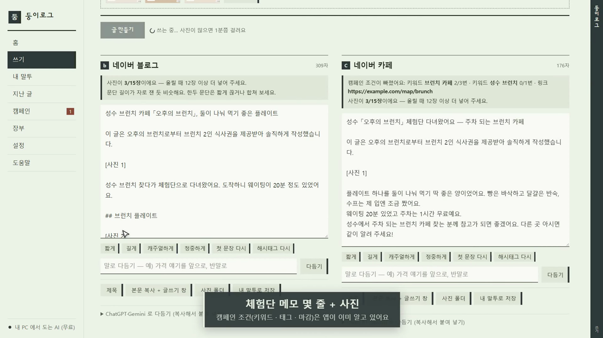

Windows 10/11 · 무료 · 내 PC 안에서만
매일 하는 귀찮은 일,
PC 가 대신하게
개인이 만든 무료 앱입니다. 가입·광고 없이 내 PC 안에서만 돌고, AI 없이도 쓸 수 있어요.
01
Taskhand
매일 사이트 들어가 확인하는 일한 번 해 보이면 다음부터 혼자 합니다. 새 주문·공지가 생기면 알려 주고, 정한 시각에 백업도 해 둬요.
자세히 · 받기 →
02
둥이로그
체험단 글을 여러 곳에 따로 쓰는 일메모 몇 줄과 사진으로 블로그·카페·인스타·스레드·틱톡·쇼츠 글 초안을 한 번에, 내 말투로. 협찬 마감과 받은 돈도 정리해요.
자세히 · 받기 →
03
Usage Tray
Claude Code 한도가 언제 차는지 모르는 일5시간 구간을 몇 % 썼는지 트레이 아이콘에 숫자로. 한도가 가깝거나, 작업이 끝나거나 나를 기다리면 알려 줍니다. 로그인 토큰은 읽지 않아요.
자세히 · 받기 →